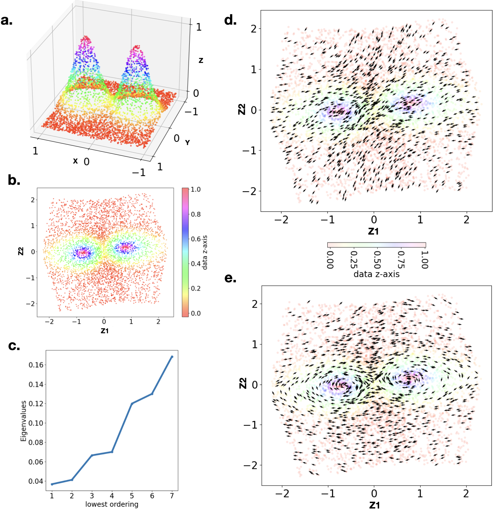
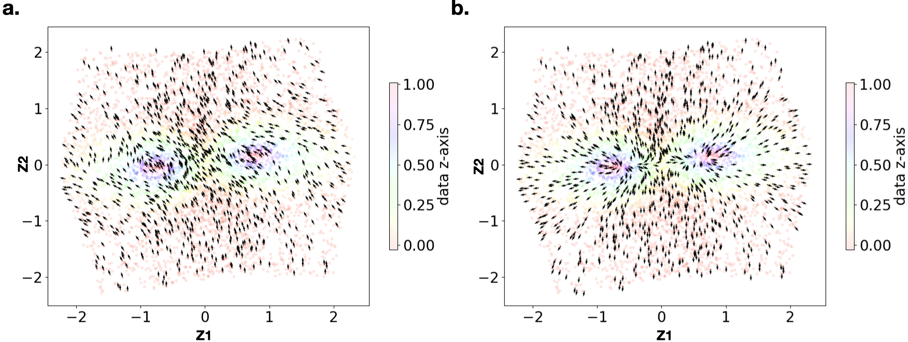

⛰️ Tutorial 2: Twin Peaks
Synthetic Dataset High-Curvature Manifold 2D intrinsic · 3D ambient
The Twin Peaks dataset challenges Latent-XAI with high curvature: two Gaussian density bumps create sharp peaks and a valley. The VAE flattens this into a 2D disk, hiding the curvature — but the decoder retains it.
Dataset
Twin Peaks points lie on the surface of two 3D Gaussian probability densities:
# Core numerical and deep-learning stack used throughout the tutorial.
import torch
import torch.nn as nn
import torch.optim as optim
import torch.nn.functional as F
import numpy as np
import matplotlib.pyplot as plt
from mpl_toolkits.mplot3d import Axes3D
from matplotlib.ticker import MaxNLocator
import os
import random
# Plot defaults chosen to make vector fields and manifolds readable in figures.
plt.rcParams.update({'font.size': 20})
plt.rcParams.update({'lines.linewidth': 5})
# Use GPU when available; this mainly speeds up VAE training.
device = torch.device("cuda" if torch.cuda.is_available() else "cpu")
print(f"Using device: {device}")
import warnings
warnings.filterwarnings("ignore", category=UserWarning)
warnings.filterwarnings("ignore", category=DeprecationWarning)
# Silence notebook-style warnings in the tutorial output.
warnings.warn = lambda *args,**kwargs: None
def set_all_seeds(seed):
"""Sets seeds for all relevant libraries for scVI reproducibility."""
os.environ['PYTHONHASHSEED'] = str(seed)
# 1. Python's built-in random module
random.seed(seed)
# 2. NumPy (used by Scanpy and scVI for data handling)
np.random.seed(seed)
# 3. PyTorch (the underlying deep learning framework)
torch.manual_seed(seed)
# 4. PyTorch CUDA operations (if using GPU)
if torch.cuda.is_available():
torch.cuda.manual_seed(seed)
torch.cuda.manual_seed_all(seed) # For multi-GPU setups
# Ensures deterministic algorithms are used for better reproducibility
torch.backends.cudnn.deterministic = True
torch.backends.cudnn.benchmark = False
print(f"Random seed set to {seed} across all relevant frameworks.")
# Build a synthetic manifold with two Gaussian peaks in z over a square (x, y) domain.
def generate_twin_peaks_data(n_samples=4000):
# Standard domain: Square [-1, 1] x [-1, 1]
x = (torch.rand(n_samples) * 2) - 1
y = (torch.rand(n_samples) * 2) - 1
# The Twin Peaks Function:
# Two Gaussian mountains at (-0.5, 0) and (0.5, 0)
# This is a classic non-convex manifold.
# Peak 1 center (-0.5, 0)
peak1 = torch.exp(-10 * ((x + 0.5)**2 + y**2))
# Peak 2 center (0.5, 0)
peak2 = torch.exp(-10 * ((x - 0.5)**2 + y**2))
# Z is the height
z = peak1 + peak2
# Stack into (N, 3) matrix
data = torch.stack([x, y, z], dim=1)
# Add slight manifold thickness so the task is realistic (not a perfectly clean surface).
data += torch.randn_like(data) * 0.01
return dataVAE Architecture & Training
A lighter 2-layer network (hidden dim = 128) with ELU for both encoder and decoder. β = 0.01 (very light KL penalty to preserve local geometry).
# VAE learns a 2D latent code while reconstructing 3D manifold coordinates.
class VAE_TwinPeaks(nn.Module):
def __init__(self, latent_dim=2):
super().__init__()
# Encoder
self.encoder = nn.Sequential(
nn.Linear(3, 128),
nn.ELU(),
nn.Linear(128, 64),
nn.ELU()
)
# Mean and log-variance parameterize q(z|x) for stochastic latent sampling.
self.fc_mu = nn.Linear(64, latent_dim)
self.fc_logvar = nn.Linear(64, latent_dim)
# Decoder (Manifold Approximator)
self.decoder = nn.Sequential(
nn.Linear(latent_dim, 64),
nn.ELU(),
nn.Linear(64, 128),
nn.ELU(),
nn.Linear(128, 3)
)
def encode(self, x):
h = self.encoder(x)
return self.fc_mu(h), self.fc_logvar(h)
def reparameterize(self, mu, logvar):
# Reparameterization trick keeps gradients flowing through sampled z.
std = torch.exp(0.5 * logvar)
eps = torch.randn_like(std)
return mu + eps * std
def decode(self, z):
return self.decoder(z)
def forward(self, x):
mu, logvar = self.encode(x)
z = self.reparameterize(mu, logvar)
recon_x = self.decode(z)
return recon_x, mu, logvar
# Training loop returns both trained model and sampled manifold points.
def train_twin_peaks():
set_all_seeds(0)
data = generate_twin_peaks_data(n_samples=5000)
# DataLoader shuffles points so each mini-batch sees mixed manifold regions.
dataset = torch.utils.data.TensorDataset(data)
loader = torch.utils.data.DataLoader(dataset, batch_size=128, shuffle=True)
model = VAE_TwinPeaks().to(device)
optimizer = optim.Adam(model.parameters(), lr=1e-3)
# Small beta prioritizes reconstruction fidelity so high-curvature peaks are preserved.
beta = 0.01
print("Training on Twin Peaks Manifold...")
for epoch in range(500):
for x_batch, in loader:
x_batch = x_batch.to(device)
optimizer.zero_grad()
recon_x, mu, logvar = model(x_batch)
# Standard beta-VAE objective: reconstruction + beta * KL regularization.
recon_loss = F.mse_loss(recon_x, x_batch, reduction='sum')
kld_loss = -0.5 * torch.sum(1 + logvar - mu.pow(2) - logvar.exp())
loss = recon_loss + beta * kld_loss
loss.backward()
optimizer.step()
return model, data
model, data = train_twin_peaks()
fig = plt.figure(figsize=(7, 7))
ax = fig.add_subplot(111, projection='3d')
# Visual check: confirms geometry really looks like two peaks in 3D.
# Original Data (Grey Mist)
d_cpu = data.cpu().numpy()
ax.scatter(d_cpu[:,0], d_cpu[:,1], d_cpu[:,2], c=d_cpu[:,2], cmap='hsv',s=4, alpha=0.6) #label='Twin Peaks Data')
#ax.set_title("Twin Peaks Manifold Learning")
#ax.legend()
ax.view_init(elev=30, azim=110)
ax.xaxis.set_major_locator(MaxNLocator(integer=True))
ax.yaxis.set_major_locator(MaxNLocator(integer=True))
ax.zaxis.set_major_locator(MaxNLocator(integer=True))
plt.savefig('plots/twin_peeks_data.png', transparent=True)
plt.show()
model.eval()
device = next(model.parameters()).device
data_gpu = data.to(device)
# Use encoder means (mu) as deterministic latent coordinates for downstream geometry.
# Encode all data to get the latent representations (z_mu)
with torch.no_grad():
mu, _ = model.encode(data_gpu)
mu = mu.cpu().numpy()
# Get original X and Z coordinates for coloring
data_cpu = data.cpu().numpy()
x_vals = data_cpu[:, 0] # Left/Right position (separates the peaks)
z_vals = data_cpu[:, 2] # Height (Energy)
# --- PLOT ---
fig, ax = plt.subplots(1, 1, figsize=(9, 7))
# Color by original x-coordinate to test whether left/right structure is separated in latent space.
# Subplot 1: Color by X-Position (Left Peak vs Right Peak)
# This shows if the VAE successfully separated the two wells
sc1 = ax.scatter(mu[:, 0], mu[:, 1], c=x_vals, cmap='coolwarm', s=5, alpha=0.6)
#ax.set_title("Latent Space (Colored by X-Position)")
ax.set_xlabel("Latent Dim 1")
ax.set_ylabel("Latent Dim 2")
plt.colorbar(sc1, ax=ax, label='Original X Coordinate')
plt.tight_layout()
plt.savefig('plots/latent_rep_two_peaks.png', transparent=True)
plt.show()
# Latent coordinates consumed by Latent-XAI.
Z = muFitting Latent-XAI
# Import local Latent-XAI package from repository path used in the notebook setup.
import sys
sys.path.append("/scratch/htc/bzfsunka/latentxai/latentxai")
import latentxai, plotting
# Fit Connection-Laplacian-based parallel vector fields using the trained decoder Jacobian.
# Compute Latent XAI
TwinPeaks_lxai = latentxai.lxai(decoder=model.decoder,
principle_tangent_dims=2,
n_neighbors=20,
# Compute several modes so we can inspect both global and localized fields.
n_components = 10, # needs change to num eigencectors
sigma=0.03)
# Builds neighborhood graph, estimates tangent transport, and solves for smooth fields.
# Fit vector field to the points Z
TwinPeaks_lxai.fit(Z)
plt.figure(figsize=(7,7))
plt.title("Smallest Eigenvalues of \n the Connection Laplacian")
# Spectrum shape indicates manifold behavior; Twin Peaks usually shows gradual growth.
plt.plot(range(1,8),TwinPeaks_lxai.eigenvalues_[:7],'-o')
ax = plt.gca()
ax.xaxis.set_major_locator(MaxNLocator(integer=True))
plt.xlabel('lowest ordering')
plt.ylabel('Eigenvalues')
plt.tight_layout()
plt.savefig('plots/two_peaks_spectrum.png', transparent=True)
# First mode often captures broad/global flow directions across the manifold.
V_latent_0 = TwinPeaks_lxai.project_fields_to_latent(Z, TwinPeaks_lxai.PVF_on_X_[0])
plotting.plot_flow(Z, V_latent_0, data[:, 2], overlay_color_label=r'data z-axis')
# Higher mode can expose localized rotational/curvature-aware behavior near peaks.
V_latent_3 = TwinPeaks_lxai.project_fields_to_latent(Z, TwinPeaks_lxai.PVF_on_X_[3])
plotting.plot_flow(Z, V_latent_3, data[:, 2], overlay_color_label=r'data z-axis')Results

Fig. 3 — Twin Peaks analysis. (a) 3D training data: the surface of two Gaussian density functions. (b) 2D VAE latent space coloured by original z-axis — the VAE flattens the curvature. (c) Spectrum of the Connection Laplacian: gradual increase, no sharp spectral gap (curved manifold). (d) First eigenvector: horizontal flow with curvature-aware bending near the peaks. (e) Third eigenvector: spiral field precisely localised around the two curvature peaks.
Curvature Recovery in the Decoder
Even though the VAE maps the Twin Peaks into a flat disk in latent space (b), the decoder still stores the curvature information. Three key observations from the eigenvectors:
- 1st eigenvector: Global horizontal flow. Near the peak regions, the arrows curve — the vector field is sensitive to the underlying curvature even though the latent representation appears flat.
- 2nd eigenvector: Perpendicular flow (see supplementary Fig. S1a), capturing the orthogonal direction of variation.
- 3rd/4th eigenvector: Spiral fields concentrated around the peak regions, capturing the local curvature deformations — information that is invisible from the latent space alone.

Fig. S1 — Twin Peaks supplementary. (a) Second eigenvector — perpendicular to first. (b) Third eigenvector — curvature spiral. Both panels show latent space coloured by original z-axis height.
Unlike the Swiss Roll, the Twin Peaks spectrum shows a gradual increase rather than a sharp gap. This is expected for a curved manifold — parallel vector fields only exist exactly on flat manifolds. The eigenvectors are "as-parallel-as-possible" minimisers of the roughness objective.